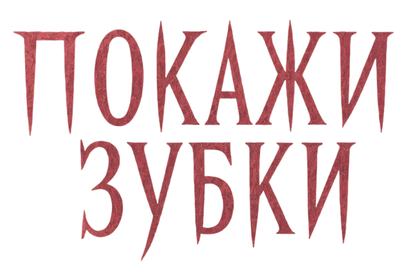

Стилдейл - тихий городок среди лесов, где с закатом запирают двери...
Пятнадцатилетний Ник Арест с рождения знал, кем станет,
и готовится продолжить дело дедушки —
главы охотников
на вампиров, единственных защитников города.
Но одна встреча заставляет его взглянуть на врага изнутри,
навсегда разрушая грань между светом и тьмой.
Как найти правду
в мире, где тебя нигде не ждут, а герои и монстры могут поменяться местами?